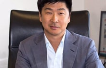

БАФ - неправительственная и некоммерческая международная организация, имеющая своей целью поддержку и развитие экономического обмена, взаимодействия и сотрудничества как в Азии, так и за её пределами.
Международность
в Боао
На мировой арене Боао уже хорошо известен и связан с международным форумом БАФ - Боаоским Азиатским Форумом (BFA).
Ежегодно в Боао в рамках Форума проводятся встречи высокого уровня с участием представителей правительственных, деловых, промышленных и научных кругов, официально именуемые конференциями Форума.
Интересные факты о Форуме:
2001
Боаоский Азиатский Форум учреждён в 2001 году
2002
с 2002 года съезды регулярно проводятся в Боао, где находится и главный офис организации.
Самыми примечательными участниками БАФ в разные годы были:
Боб Хоук
В 2002 году на первом совещании в рамках Боаоского Азиатского форума, - бывший премьер-министр Австралии Боб Хоук, инициатор проведения форума, который заявил, что для роста и развития Азии необходима особая площадка, которая соединит страны азиатского региона и позволит им глубже узнать друг друга.

Цай Сянчи
В 2004 году - главный редактор отделения американской ежедневной газеты" Волл стрит джорнал" в Азии Цай Сянчи.
Романо Проди
В 2005 году - бывший президент совета ЕС Романо Проди.
Билл Гейтс
В 2007 году - Билл Гейтс (который сделал заявление, что очень скоро центр мира переместится в Азию).
Джордж Буш
В 2009 году - бывший президент США Джордж Буш (отметил, что центр мировой экономики переместился в Азиатско-Тихоакеанский Регион).
Генри Полсон
В 2010 году - Генри Полсон, бывший министр финансов США; Ларс Лекке Расмуссен, Премьер-министр Дании; Джайрам Рамеш - Министр окружающей среды и лесного хозяйства Индии.
Дмитрий Медведев
В 2011 году делегацию РФ возглавил Дмитрий Анатольевич Медведев.
Джордж Сорос
Один из 30 самых богатых людей в мире

Кристин Лагард
Директор-распорядитель МВФ.
Ежегодно Форум выбирает главную тему для обсуждения ведущими умами человечества
2004
«Азия ищет совместный успех: Открытие Азии миру»
2005
«Азия ищет совместный успех: Новая роль Азии»
2006
«Азия ищет совместный успех: Новые возможности Азии»
2007
«Азия ищет совместный успех: Азия в глобальной экономике – инновация и поступательное развитие»
2008
«Зеленая Азия: Достижение совместного успеха в реформе»
2009
«Экономический кризис и Азия: Вызовы и перспективы»
2010
«Зеленое восстановление: Реальный выбор поступательного развития Азии»
2011
«Всестороннее развитие: Совместный регламент и новые вызовы»
2012
«Пути развития Азии на фоне глобальной рецессии»
2013
«Обновление, ответственность, сотрудничество: Азия в поисках совместного развития»
2014
«Новое будущее Азии: Идентификация драйверов нового роста»
Председатель КНР Си Цзиньпин выступил на церемонии открытия совещания с докладом по теме "Совместное созидание прекрасного будущего Азии и мира".
2015
«Новое будущее Азии: шаг к сообществу общей судьбы»
На форум прилетели такие известные личности, как президент Индонезии Джоко Видодо, президент Непала Рам Баран Ядав, генерал-губернатор Австралии Питер Косгроув, премьер-министр Нидерландов Марк Рютте, президент Замбии Эдгар Лунгу и первый заместитель председателя правительства РФ Игорь Шувалов. В третий раз на Боаоском азиатском форуме присутствовал председатель КНР Си Цзиньпин, что говорит о повышенном внимании Китая к этому мероприятию. С его помощью КНР надеется расширить сферы сотрудничества со странами Азии и мира в целом.
2016
«Новое будущее Азии: новая действующая сила, новое видение»
2017
«Взгляд в лицо будущего глобализации и свободной торговли»
Для укрепления общего намерения развивать свободную торговлю.
Представители разных организаций с удовольствием прилетают на ежегодный форум,так как прекрасная природа, тёплое море, красивые горы, люксовые номера в отеле при организации - всё как будто специально располагает для продуктивных обсуждений и переговоров. А с открытием нового аэропорта Боао, престиж, доступность и безопасность БАФ стали ещё выше. Традиционно на ежегодных конференциях Форума присутствуют первые лица Китая, подчеркивая важность этого саммита для принимающей стороны.
Советы нашим читателям:
Место основания Форума (старая площадка) и место проведения его ежегодных конференций (постоянная площадка) являются туристическими достопримечательностями, доступными для посещения простыми туристами.
Для туристов организованы специальные обзорные экскурсии в здании проведения Форума. Профессиональный фотограф сделает Вам прекрасные официальные снимки, будто Вы являетесь участником Форума или выступаете с трибуны. Можно приобрести и памятную сувенирную продукцию с фирменной эмблемой БАФ.
Круглый год (кроме времени проведения ежегодной конференции Форума) роскошные 5-звездочные отели Форума с их богатой инфраструктурой доступны для гостей Боао. Стоит ли говорить, что сервис здесь организован на высочайшем уровне?